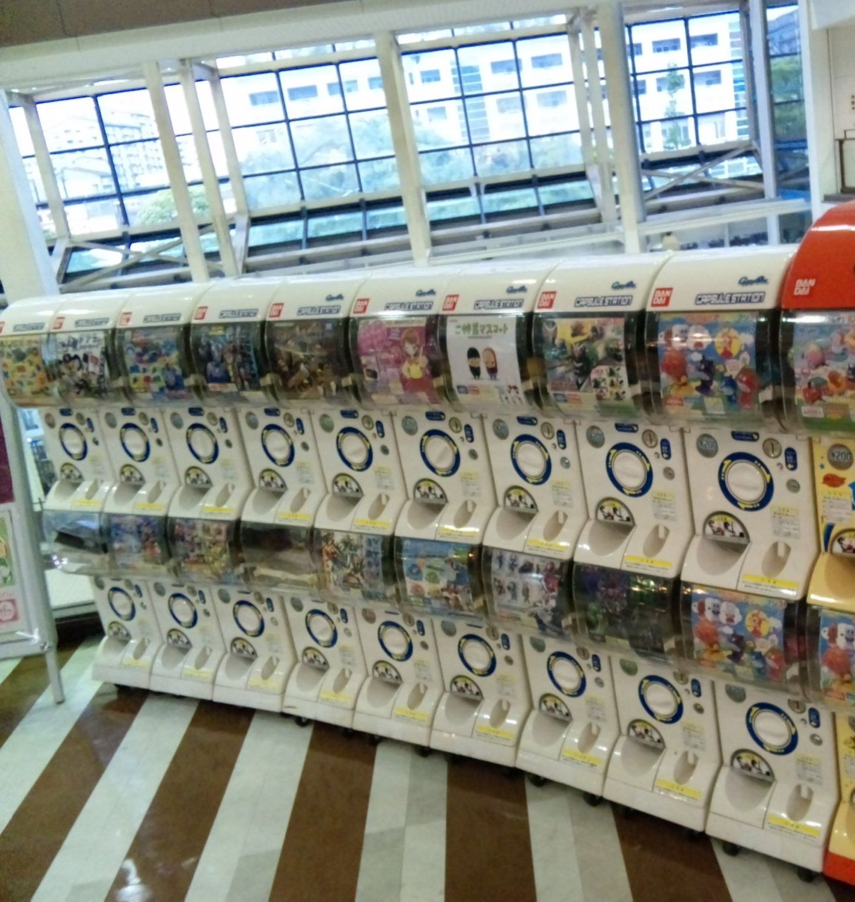

Japan with
Japan with
The card above the machine shows five possibilities. One is a dignified miniature shrine gate. Another is a cat wearing a slice of bread. The third is a perfect little traffic cone. You feed coins into the slot, turn a handle, hear plastic tumble through plastic, and a sealed sphere drops into the tray. It may contain the thing you wanted. It probably will not.
This is the small drama called gacha-gacha, gachapon, or—under Bandai’s trademark—Gashapon. The competing names imitate the crank’s clatter and the capsule’s pop. The mechanism is not Japanese in origin: coin-operated novelty dispensers developed overseas, and capsule vending reached Japan in 1965. What Japan transformed was the cultural job of the machine.
Elsewhere, a capsule dispenser can still read as a child’s impulse purchase. In Japan, entire floors are lined with them, adults inspect release calendars, and manufacturers miniaturize everything from restaurant plates to laboratory equipment. The oddest examples look like jokes. The deeper story is about serious craft, controlled chance, and a retail format able to serve an audience too specific for an ordinary shelf.
First surprise: “gacha” is not one company
The generic English label “capsule toy” hides a crowded Japanese vocabulary. Takara Tomy Arts owns the Japanese trademark Gacha. Bandai calls its brand Gashapon, explaining gasha as the crank sound and pon as the capsule dropping. Fans also say gachapon or gacha-gacha. The terms overlap in conversation, but logos and product lines belong to different makers.
Bandai entered the business in 1977 with a 100-yen machine. Early machines commonly lived outside candy and stationery shops, selling inexpensive novelties to children. Licensed character figures later raised the quality and collecting stakes. Then better sculpting, digital design, specialized retail and social media widened the audience. The Japan Capsule Toy Association estimates the 2025 market at roughly ¥196 billion, up 39 percent from its 2024 estimate of ¥141 billion. Its method is manufacturer shipment value based on interviews with 41 makers, so it should not be confused with Bandai’s narrower fiscal-year retail-price estimate or with cash actually fed into every machine.
The answer hidden inside the capsule
A conventional shop must justify shelf space. A capsule machine needs only one narrow face and one product card. That makes it a physical publishing platform for ideas that are too small, strange or niche for normal retail: a single species of beetle, the chair from a familiar family restaurant, a set of warning signs, or an art-history series that might interest only a few people passing that corridor.
Each series divides one concept into several outcomes. The capsule hides inventory, so the customer buys a chance rather than selecting an item. That uncertainty turns a tiny purchase into a story: the handle, the sound, the reveal, the trade with a friend. On social media, the result becomes a photograph or a complaint. In a store, one person’s disappointment often becomes the next person’s reason to turn.
Four kinds of “crazy”

Takara Tomy Arts’ official releases make the range concrete. Its 2024 “Gacha Day” materials connect the modern miniature boom to Japanese traditions of making small, intricate worlds—bonsai, doll furnishings and detailed craft—while also showing realistic insects and practical miniature equipment. A 2022 Metropolitan Museum of Art collection turned five works, including the blue faience hippopotamus commonly called William, into ¥400 capsule pieces. At the comic end, its “Shocked Animals” series sculpted pandas, cats, dogs, piglets and mice with exaggerated human-like surprise. None proves a timeless national instinct. Together they show a mature production network using one format for education, brand collaboration, craft and visual jokes.
Why adults keep turning
The price sits in a psychologically convenient middle. Many machines still cost a few hundred yen—low enough to try, high enough to support paint, assembly and licensing. The object is small enough for a desk or bag, and the series gives it a boundary: five outcomes feel collectible in a way an endless shelf does not. Adults can buy nostalgia without finding room for a large toy.
Specialty stores intensify the effect. Bandai Namco opened its Ikebukuro flagship in 2021 with more than 3,000 machine faces; 3,010 were certified by Guinness World Records at the time. A wall that large changes browsing into an expedition. Airports and stations also turn loose coins and waiting time into souvenirs. But “the biggest” is not a permanent travel promise: machine counts, products and store records change, so check the current official store page before making a special trip.

The price of the surprise
The same design that makes gacha exciting also makes it easy to overspend. You cannot normally choose a variant, and duplicate pulls are part of the system. A ¥400 attempt can become ¥2,000 without producing the one figure shown at the center of the card. Odds are not usually displayed as they are in a digital game; you see the lineup, not the remaining inventory. Children and adults alike benefit from deciding a limit before the first turn.
There is also literal waste. Every object arrives in a capsule, often with a paper insert and plastic wrapping. Bandai Namco says it has collected capsules since 2006 and expanded a group recycling program in 2021. It reports approximately 47 metric tons collected in fiscal 2024 and says recycled pellets currently make up about 40 percent of new capsules in that loop. That is meaningful infrastructure, not permission to ignore consumption: not every brand or location uses the same system, transport and remanufacturing still consume resources, and a duplicate toy can become clutter even when its shell is recycled.
How to try gacha without losing the plot
Bring ¥100 coins, although larger stores may have change machines or cashless models. Match the display card to the machine below it; in dense rows, it is easy to feed the wrong slot. If a capsule jams or the machine takes payment without dispensing, ask staff rather than forcing the handle. “Sumimasen, dete kimasen” means, roughly, “Excuse me, it did not come out.” For more free practice with phrases like this, Japanese Training Lab works in the browser with no signup.
The best first pull is not necessarily a famous character. Choose a machine that documents something you noticed in Japan: a railway object after a train journey, a regional dish after lunch, or an absurd household miniature that makes no sense until you compare it with the real thing. The capsule then becomes evidence of looking, not merely another purchase.
Sources and verification
Market, store and sustainability figures checked November 14, 2026. Product availability, prices and machine counts change; official examples establish the range of the medium and are not promises of current stock.
- Japan Capsule Toy Association — 2025 market survey (released February 19, 2026)
- Bandai Namco Holdings — Gashapon history, naming and market context
- Bandai Gashapon — official 50th-anniversary timeline
- Bandai Namco Amusement — Ikebukuro 3,010-machine Guinness World Records certification
- Bandai Namco Holdings — capsule collection and recycled-material figures
- Takara Tomy Arts — Gacha Day 2024 history and miniature-culture examples
- Takara Tomy Arts — Metropolitan Museum of Art Gacha Collection
- Takara Tomy Arts — Shocked Animals product archive
“Craziest” is an editorial description, not a measured ranking. No manufacturer paid for inclusion. Brand examples are used to explain verified industry patterns, not to endorse a product.

Find today’s tiny surprises in real Japan.
Walk through current streets and shops on Yuji’s TikTok LIVE, then learn the words you meet while playing DraMap.